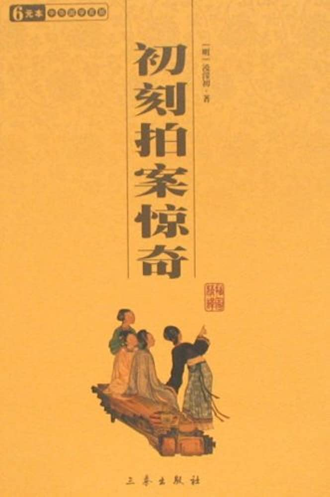

卷五感神媒张德容遇虎凑吉日裴越客乘龙#

诗曰：
每说婚姻是宿缘，定经月老把绳牵。
非徒配偶难差错，时日犹然不后先。
话说婚姻事皆系前定，从来说月下老赤绳系足，虽千里之外，到底相合。若不是姻缘，眼面前也强求不得的。就是是因缘了，时辰来到，要早一日，也不能勾。时辰已到，要迟一日，也不能勾。多是氤氲大使暗中主张，非人力可以安排也。
唐朝时有一个弘农县尹，姓李。生一女，年已及笄，许配卢生。那卢生生得炜貌长髯，风流倜傥，李氏一家尽道是个快婿。一日，选定日子，赘他入宅。当时有一个女巫，专能说未来事体，颇有应验，与他家往来得熟，其日因为他家成婚行礼，也来看看耍子。李夫人平日极是信他的，就问他道：“你看我家女婿卢郎，官禄厚薄如何？”女巫道：“卢郎不是那个长须后生么？”李母道：“正是。”女巫道：“若是这个人，不该是夫人的女婿。夫人的女婿，不是这个模样。”李夫人道：“吾女婿怎么样的？”女巫道：“是一个中形白面，一些髭髯也没有的。”李夫人失惊道：“依你这等说起来，我小姐今夜还嫁人不成哩！”女巫道：“怎么嫁不成？今夜一定嫁人。”李夫人道：“好胡说！既是今夜嫁得成，岂有不是卢郎的事？”女巫道：“连我也不晓得缘故。”道言未了，只听得外面鼓乐喧天，卢生来行纳采礼，正在堂前拜跪。李夫人拽着女巫的手，向后堂门缝里指着卢生道：“你看这个行礼的，眼见得今夜成亲了，怎么不是我女婿？好笑！好笑！”那些使数养娘们见夫人说罢，大家笑道：“这老妈妈惯扯大谎，这番不谁了。”女巫只不做声。
须臾之间，诸亲百眷都来看成婚盛礼。元来唐时衣冠人家，婚礼极重。合卺之夕，凡属两姓亲朋，无有不来的。就中有引礼、赞礼之人，叫做“傧相”，都不是以下人做，就是至亲好友中间，有礼度熟闲、仪客出众、声音响亮的，众人就推举他做了，是个尊重的事。其时卢生同了两个傧相，堂上赞拜。礼毕，新人入房。卢生将李小姐灯下揭巾一看，吃了一惊，打一个寒襟，叫声“呵呵！”往外就走。亲友问他，并不开口，直走出门，跨上了马，连加两鞭，飞也似去了。宾友之中，有几个与他相好的，要问缘故。又有与李氏至戚的，怕有别话错了时辰，要成全他的，多来追赶。有的赶不上罢了，那赶着的，问他劝他，只是摇手道：“成不得！成不得！”也不肯说出缘故来，抵死不肯回马。众人计无所出，只得走转来，把卢生光景，说了一遍。那李县令气得目睁口呆，大喊道：“成何事体！成何事体！”自思女儿一貌如花，有何作怪？今且在众亲友面前说明，好教他们看个明白。因请众亲戚都到房门前，叫女儿出来拜见。就指着道：“这个便是许卢郎的小女，岂有惊人丑貌？今卢郎一见就走，若不教他见见众位，到底认做个怪物了！”众人抬头一看，果然丰姿冶丽，绝世无双。这些亲友也有说是卢郎无福的，也有说卢郎无缘的，也有道日子差池犯了凶煞的，议论一个不定。李县令气忿忿的道：“料那厮不能成就，我也不伏气与他了。我女儿已奉见宾客，今夕嘉礼不可虚废。宾客里面有愿聘的，便赴今夕佳期。有众亲在此作证明，都可做大媒。”只见傧相之中，有一人走近前来，不慌不忙道：“小子不才，愿事门馆。”众人定睛看时，那人姓郑，也是拜过官职的了。面如傅粉，唇若涂朱，下颏上真个一根髭须也不曾生，且是标致。众人齐喝一声采道：“如此小姐，正该配此才郎！况且年貌相等，门阀相当。”就中推两位年高的为媒，另择一个年少的代为傧相，请出女儿，交拜成礼，且应佳期。一应未备礼仪，婚后再补。是夜竟与郑生成了亲。郑生容貌果与女巫之言相合，方信女巫神见。
成婚之后，郑生遇着卢生，他两个原相交厚的，问其日前何故如此。卢生道：“小弟揭巾一看，只见新人两眼通红，大如朱盏，牙长数寸，爆出口外两边。那里是个人形？与殿壁所画夜叉无二。胆俱吓破了，怎不惊走？”郑生笑道：“今已归小弟了。”卢生道：“亏兄如何熬得？”郑生道：“且请到弟家，请出来与兄相见则个。”卢生随郑生到家，李小姐梳壮出拜，天然绰约，绝非房中前日所见模样，懊悔无及。后来闻得女巫先曾有言，如此如此，晓得是有个定数，叹往罢了。正合着古话两句道：
有缘千里能相会，无缘对面不相逢。
而今再说一个唐时故事：乃是乾元年间，有一个吏部尚书，姓张名镐。有第二位小姐，名唤德容。那尚书在京中任上时，与一个仆射姓裴名冕的，两个往来得最好。裴仆射有第三个儿子，曾做过蓝田县尉的，叫做裴越客。两家门当户对，张尚书就把这个德容小姐许下了他亲事，已拣定日子成亲了。
却说长安西市中有个算命的老人，是李淳风的族人，叫做李知微，星数精妙。凡看命起卦，说人吉凶祸福，必定断下个日子，时刻不差。一日，有个姓刘的，是个应袭赁子，到京理荫求官，数年不得。这一年已自钻求要紧关节，叮嘱停当，吏部试判已毕，道是必成。闻西市李老之名，特来请问。李老卜了一封，笑道：“今年求之不得，来年不求自得。”刘生不信，只见吏部出榜，为判上落了字眼，果然无名。到明年又在吏部考试，他不曾央得人情，仰且自度书判中下，未必合式，又来西市问李老。李老道：“我旧岁就说过的，君官必成，不必忧疑。”刘生道：“若得官，当在何处？”李老道：“禄在大梁地方。得了后，你可再来见我，我有话说。”吏部榜出，果然选授开封县尉。刘生惊喜，信之如神，又去见李老。李老道：“君去为官，不必清俭，只消恣意求取，自不妨得。临到任满，可讨个差使，再入京城，还与君推算。”刘生记着言语，别去到任。那边州中刺史见他旧家人物，好生委任他。刘生想着李老之言，广取财贿，毫无避忌。上下官吏都喜欢他，再无说话。到得任满，贮积千万。遂见刺史，讨个差使。刺史依允，就教他部着本租税解京。到了京中，又见李老。李老道：“公三日内即要迁官。”刘生道：“此番进京，实要看个机会，设法迁转。却是三日内，如何能勾？况未得那升迁日期，这个未必准了。”李老道：“决然不差，迁官也就在彼郡。得了后，可再来相会，还有说话。”刘生去了，明日将州中租赋到左藏库交纳。正到库前，只见东南上诺大一只五色鸟飞来库藏屋顶住着，文彩辉煌，百鸟喧噪，弥天而来。刘生大叫：“奇怪！奇怪！”一时惊动了内官宫监。大小人等，都来看嚷。有识得的道：“此是凤凰也！”那大鸟住了一会，听见喧闹之声，即时展翅飞起，百鸟渐渐散去。此话闻至天子面前，龙颜大喜。传出敕命来道：“那个先见的，于原身官职加升一级改用。”内官查得真实，却是刘生先见，遂发下吏部，迁授浚仪县丞。果是三日，又就在此州。刘生愈加敬信李老，再来问此去为官之方。李老云“只须一如前政。”刘生依言，仍旧恣意贪取，又得了千万。任满赴京听调，又见李老。李老曰：“今番当得一邑正官，分毫不可取了。慎之！慎之！”刘生果授寿春县宰。他是两任得惯了的手脚，那里忍耐得住？到任不久，旧性复发，把李老之言，丢过一边。偏生前日多取之言好听，当得个谨依来命；今日不取之言迂阔，只推道未可全信。不多时上官论刻追赃，削职了。又来问李老道：“前两任只叫多取，今却叫不可妄取，都有应验，是何缘故？”李老道：“今当与公说明，公前世是个大商，有二千万资财，死在汴州，财散在人处。公去做官，原是收了自家旧物，不为妄取，所以一些无事。那寿春一县之人，不曾欠公的，岂可过求？如今强要起来，就做坏了。”刘生大伏，惭悔而去。凡李老之验，如此非一，说不得这许多，而今且说正话。
那裴仆射家拣定了做亲日期，叫媒人到张尚书家来通信道日。张尚书闻得李老许多神奇灵应，便叫人接他过来，把女儿八字与婚期，教他合一合看，怕有什么冲犯不宜。李老接过八字，看了一看，道：“此命喜事不在今年，亦不在此方。”尚书道：“只怕日子不利，或者另改一个也罢，那有不在今年之理？况且男女两家，都在京中，不在此方，便在何处？”李道：“据看命数已定，今年决然不得成亲，吉日自在明年三月初三日。先有大惊之后，方得会合，却应在南方。冥数已定，日子也不必选，早一日不成，迟一日不得。”尚书似信不信的道：“那有此话？”叫管事人封个赏封，谢了去。见出得门，裴家就来接了去，也为婚事将近，要看看休咎。李老到了裴家占了一卦道：“怪哉！怪哉！此封恰与张尚书家的命数，正相符合。”遂取文房四宝出来，写了一柬：三月三日，不迟不疾。水浅舟胶，虎来人得。惊则大惊，吉则大吉。
裴越客看了，不解其意，便道：“某正为今年尚书府亲事只在早晚，问个吉凶。这‘三月三日’之说，何也？”李老道：“此正是婚期。”裴越客道：“日子已定了，眼见得不到那时了。不准，不准！”李老道：“郎君不得性急。老汉所言，万无一误。”裴越客道：“‘水浅舟胶，虎来人得。’大略是不祥的说话了。”李老道：“也未必不祥，应后自见。”作别过了。
正待要欢天喜地指日成亲，只见补阙拾遗等官，为选举不公，文章论刻吏部尚书。奉圣旨：谪贬张镐为定州司户，即日就道。张尚书叹道：“李知微之言，验矣！”便教媒人回复裴家，约定明年三月初三，到定州成亲。自带了家眷，星夜到贬处去了。元来唐时大官廖谪贬甚是消条，亲眷避忌，不十分肯与往来的，怕有朝廷不测，时时忧恐。张尚书也不把裴家亲事在念了。裴越客得了张家之信，吃了一惊，暗暗道：“李知微好准卦！毕竟要依他的日子了。”真是到手佳期却成虚度，闷闷不乐过了年节。一开新年，便打点束装，前赴定州成婚。那越客是豪奢公子，规模不小。坐了一号大座船，满载行李辎重，家人二十多房，养娘七八个，安童七八个，择日开船。越客恨不得肋生双翅，脚下腾云，一眨眼就到定州。行了多日，已是二月尽边，皆因船只狼逾，行李沉重，一日行不上百来里路，还有搁着浅处，弄了几日才弄得动的，还差定州三百里远近。越客心焦，恐怕张家不知他在路上，不打点得，错过所约日子。一面舟行，一面打发一个家人，在岸路驿中讨了一匹快马，先到定州报信。家人星夜不停，报入定州来。那张尚书身在远方，时怀忧闷，况且不知道裴家心下如何，未知肯不嫌路远来赴前约否。正在思忖不定，得了此报，晓得裴郎已在路上将到，不胜之喜。走进衙中，对家眷说了，俱各欢喜不尽。
此时已是三且初二日了，尚书道：“明日便是吉期。如何来得及？但只是等裴郎到了，再定日未迟。”是夜因为德容小姐佳期将近，先替他簪了髻，设宴在后花园中，会集衙中亲丁女眷，与德容小姐添妆把盏。那花园离衙斋将有半里，定州是个山深去处。虽然衙斋左右多是些丛林密箐，与山林之中无异，可也幽静好看。那德容小姐同了衙中姑姨姊妹，尽意游玩。酒席既阑，日色已暮，都起身归衙。众女眷或在前，或在后，大家一头笑语，一头行走。正在喧哄之际，一阵风过，竹林中腾地跳出一个猛虎来，擒了德容小姐便走。众女眷吃了一惊，各各逃窜。那虎已自跳入翳荟之处，不知去向了。众人性定，奔告尚书得知，合家啼哭得不耐烦。那时夜已昏黑，虽然聚得些人起来，四目相视，束手无策。无非打了火把，四下里照得一照，知他在何路上可以救得？干闹嚷了一夜，一毫无干。到得天晓，张尚书噙着眼泪，点起人夫，去寻骸骨。漫山遍野，无处不到，并无一些下落。张尚书又恼又苦，不在话下。
且说裴越客已到定州界内石阡江中。那江中都是些山根石底，重船到处触碍，一发行不得。已是三月初二日了，还差几十里。越客道：“似此行去，如何赶得明日到？”心焦背热，与船上人发极嚷乱。船上人道：“是用不得性的！我们也巴不得到了讨喜酒吃，谁耐烦在此延挨？”裴越客道：“却是明日吉期，这等担阁怎了？”船上人道：“只是船重得紧，所以只管搁浅。若要行得快，除非上了些岸，等船轻了好行。”越客道：“有理，有理。”他自家着了急的，叫住了船，一跳便跳上了岸，招呼人家人起来。那些家人见主人已自在岸上了，谁敢不上？一定就走了二十多人起来，那船早自轻了。越客在前，人家人在后，一路走去。那船好转动，不比先前，自在江中相傍着行。行得四五里，天色将晚。看见岸旁有板屋一间，屋内有竹床一张，越客就走进屋内，叫仆童把竹床上扫拂一扫拂，尘了歇一歇气再走。这许多僮仆，都站立左右，也有站立在门外的。正在歇息，只听得树林中飕飕的风响。于时一线月痕和着星光，虽不甚明白，也微微看得见，约莫风响处，有一物行走甚快。将到近边，仔细看去，却是一个猛虎背负一物而来。众人惊惶，连忙都躲在板屋里来。其虎看看至近，众人一齐敲着板屋呐喊，也有把马鞭子打在板上，振得一片价响。那虎到板屋侧边，放下背上的东西，抖抖身子，听得众人叫喊，象似也有些惧怕，大吼一声，飞奔入山去了。
众人在屋缝里张着，看那放下的东西，恰象个人一般，又恰象在那里有些动。等了一会，料虎去远了，一齐捏把汗出来看时，却是一个人，口中还微微气喘。来对越客说了，越客分忖众人救他，慌忙叫放船拢岸。众人扛扶其人上了船，叫快快解了缆开去，恐防那虎还要寻来。船行了半响，越客叫点起火来看。舱中养娘们各拿蜡烛点起，船中明亮。看那人时，却是：
眉湾杨柳，脸绽芙蓉。喘吁吁吐气不齐，战兢兢惊神未定。头垂发乱，是个醉扶上马的杨妃；目闭唇张，好似死乍还魂的杜丽。面庞勾可十六八，美艳从来无二三。
越客将这女子上下看罢，大惊说道：“看他容颜衣服，决不是等闲村落人家的。”叫众养娘好生看视。众养娘将软褥铺衬，抱他睡在床上，解看衣服，尽被树林荆刺抓破，且喜身体毫无伤痕。一个养娘替他将乱发理清梳通了，挽起一髻，将一个手帖替他扎了。拿些姜汤灌他，他微微开口，咽下去了。又调些粥汤来灌他。弄了三四更天气，看看苏醒，神安气集。忽然抬起头来，开目一看，看见面前的人一个也不认得，哭了一声，依旧眠倒了。这边养娘们问他来历、缘故及遇虎根由，那女子只不则声，凭他说来说去，竟不肯答应一句。
渐渐天色明了，岸上有人走动，这边船上也着水夫上纤。此时离州城只有三十里了。听得前面来的人，纷纷讲说道：“张尚书第二位小姐，昨夜在后花园中游赏，被虎扑了去，至今没寻尸骸处。”有的道：“难道连衣服都吃尽了不成？”水夫闻得此言，想着夜来的事，有些奇怪，商量道：“船上那话儿莫不正是？”就着一个下船来，把路上人来的说话，禀知越客。越客一发惊异道：“依此说话，被虎害的正是这定下的娘子了。这船中救得的，可是不是？”连忙叫一个知事的养娘来，分忖他道：“你去对方才救醒的小娘子说，问可是张家德容小姐不是。”养娘依言去问，只见那女子听得叫出小名来，便大哭将起来，道：“你们是何人，晓得我的名字？”养娘道：“我们正是裴官人家的船，正为来赴小姐佳期，船行的迟，怕赶日子不迭，所以官人只得上岸行走，谁知却救了小姐上船，也是天缘分定。”那小姐方才放下了心，便说：“花园遇虎，一路上如腾云驾雾，不知行了多少路，自拼必死，被虎放下地时，已自魂不附体了。后来不知如何却在船上。”养娘把救他的始未说了一遍。来复越客道：“正是这个小姐。”越客大喜，写了一书差一个人飞报到州里尚书家来。
尚书正为女儿骸骨无寻，又且女婿将到，伤痛无奈，忽见裴家苍头有书到，愈加感切。拆开来看，上写道：
趋赴嘉札，江行舟涩。从陆倍道，忽遇虎负爱女至。惊逐之顷，虎去而人不伤。今完善在舟，希示进止！子婿裴越客百拜。
尚书看罢，又惊又喜。走进衙中说了，满门叹异。尚书夫人便道：“从来罕闻奇事。想是为吉日赶不及了，神明所使。”今小姐既在裴郎船上，还可赶得今朝成亲。”尚书道：“有理，有理。”就叫牵一匹快马，带了仪从，不上一个时辰，赶到船上来。翁婿相见，甚喜。见了女儿，又悲又喜，安慰了一番。尚书对裴越客道：“好教贤婿得知，今日之事，旧年间李知微已断定了，说成亲毕竟要今日。昨晚老夫见贤婿不能勾就到，道是决赶不上今日这吉期，谁想有此神奇之事，把小女竟送到尊舟？如今若等尊舟到州城，水路难行，定不能勾。莫若就在尊舟，结了花烛，成了亲事，明日慢慢回衙，这吉期便不错过了。”裴越客见说，便想道：“若非岳丈之言，小婿几乎忘了。旧年李知微题下六句。首二句道：‘三月三日，不迟不疾。’若是小婿在舟行时，只疑迟了，而今虎送将来，正应着今日。中二句道：‘水浅舟胶，虎来人得。’小婿起初道不祥之言，谁知又应着这奇事。后来二句：‘惊则大惊，吉则大吉。’果然这一惊不小，谁知反因此凑着吉期。李知微真半仙了！”张尚书就在船边分派人，唤起傧相，办下酒席，先在舟中花烛成亲，合卺饮宴。礼毕，张尚书仍旧骑马先回，等他明日舟到，接取女儿女婿。
是夜，裴越客遂同德容小姐就在舟中共入鸳帏欢聚。少年夫妇，极尽于飞之乐。明日舟到，一同上岸，拜见丈母诸亲。尚书夫人及姑姨姊妹、合衙人等，看见了德容小姐，恰似梦中相逢一般。欢喜极了，反有堕下泪来的。人人说道：“只为好日来不及，感得神明之力，遣个猛虎做媒，把百里之程顷刻送到。从来无此奇事。”这话传出去，个个奇骇，道是新闻。民间各处，立起个“虎媒之祠”。但是有婚姻求合的，虔诚祈祷，无有不应。至今黔峡之间，香火不绝。于时有六句口号：
仙翁知微，判成定数。
虎是神差，佳期不挫。
如此媒人，东道难做。